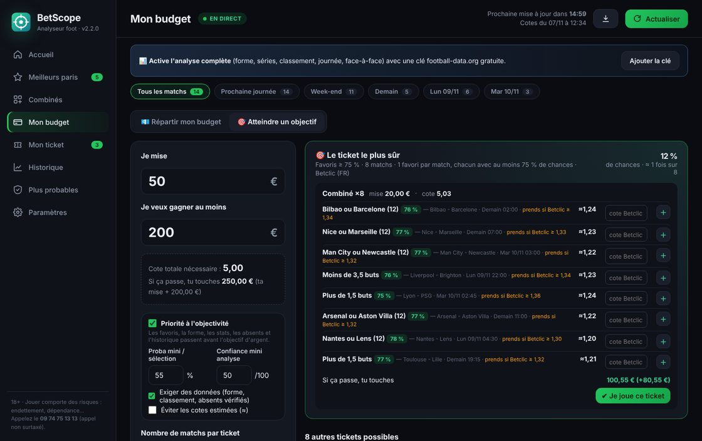
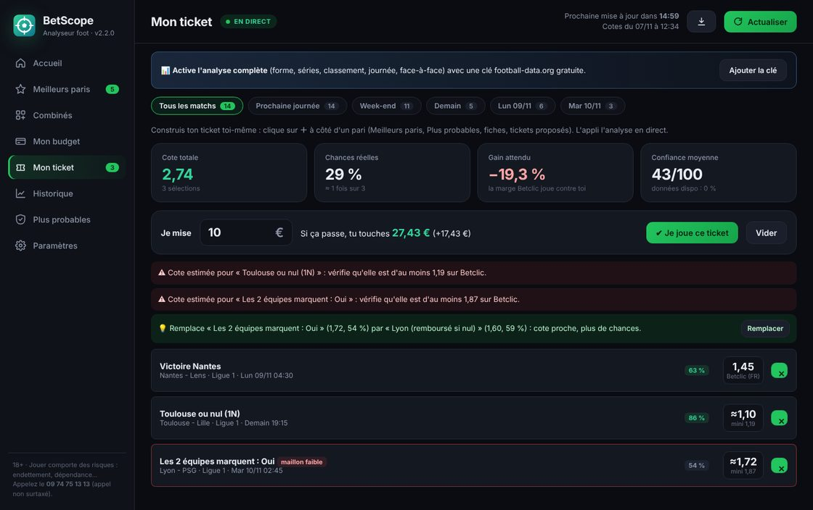
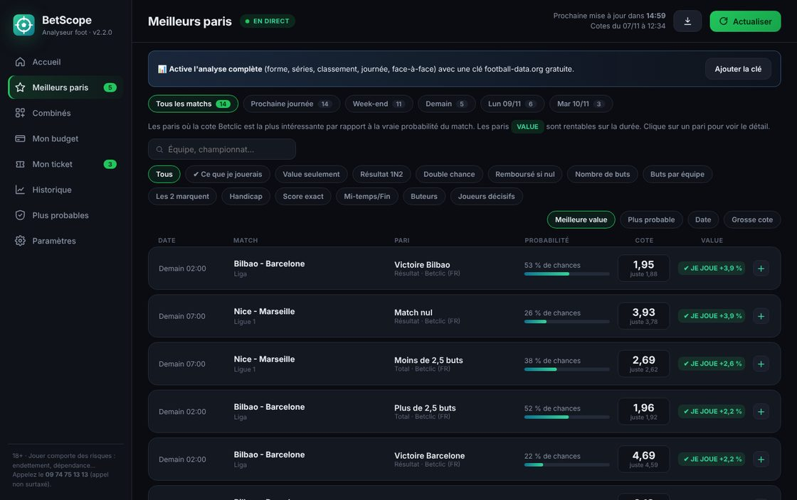
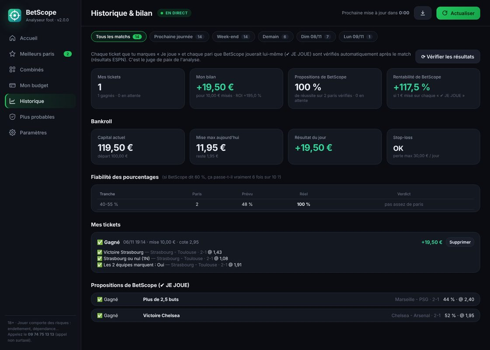
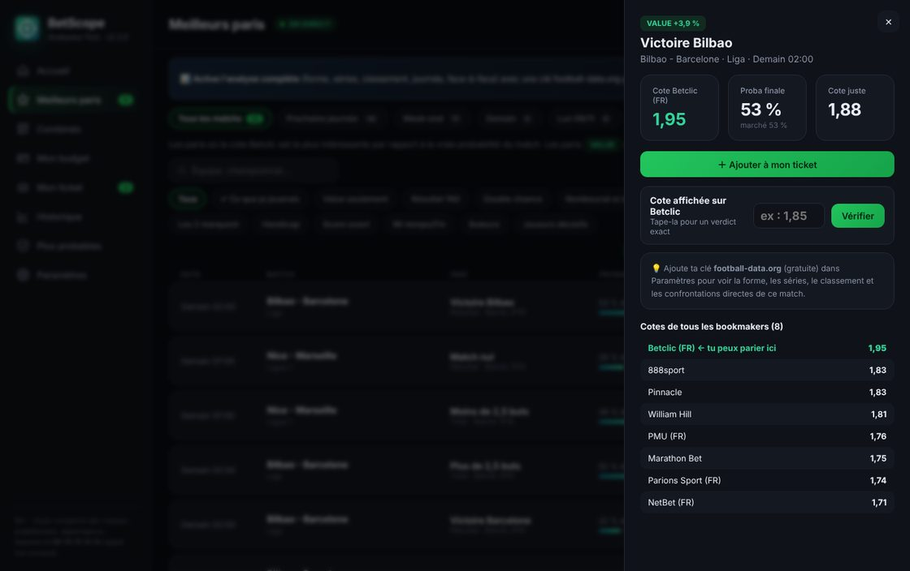

Forme du moment
Les 5 derniers matchs, les séries, le bilan domicile et extérieur.
ESPN · football-data.org
Cotescope compare les cotes de 10 bookmakers, recoupe la forme, les absents, le classement et les confrontations directes, puis te construit le ticket qui a le plus de chances d'atteindre ton objectif, chez tes bookmakers.
Une cote, c'est une probabilité déguisée, avec la marge du bookmaker en plus. Cotescope retire la marge, corrige avec le terrain, et garde uniquement ce qui tient la route.
Cotes de Pinnacle, Betclic, Winamax et 7 autres, mises à jour automatiquement.
Marges retirées, consensus du marché pondéré vers les bookmakers les plus précis.
Forme récente, absents pondérés, enjeu, rotation, météo, face-à-face, modèle de buts.
Recherche sur toutes les sélections de tous les matchs pour atteindre ta cote avec le plus de chances.
Tu donnes ta mise et ton gain visé. Cotescope calcule la cote nécessaire et te sort le ticket le plus sûr pour y arriver, plus les alternatives classées.

Ajoute les paris de ton choix avec ＋. Tu vois en direct la cote, les vraies chances et le gain, sélection par sélection.

Chaque pari affiche sa probabilité, sa cote juste et sa value. Le badge ✔ JE JOUE marque ceux que Cotescope jouerait avec son propre argent.

Tes tickets et les propositions de Cotescope sont réglés automatiquement avec les résultats officiels. Tu vois si l'analyse tient ses promesses.

Chaque fiche montre ce que dit chaque source, les arguments pour les deux équipes, une note de fiabilité et ce qui pourrait faire mentir le pronostic.
Les 5 derniers matchs, les séries, le bilan domicile et extérieur.
Un buteur à 8 buts compte plus qu'un remplaçant. Les joueurs clés sont marqués ⭐.
Force d'attaque et de défense sur toute la saison, buts attendus de chaque équipe.
Les 10 derniers face-à-face, toutes compétitions, et leur moyenne de buts.
Course au titre, à l'Europe, lutte pour le maintien.
Match européen à moins de 3,5 jours, jours de repos depuis le dernier match.
Pluie et vent au coup d'envoi, qui font baisser le nombre de buts.
Quand la cote de Pinnacle chute, l'argent des parieurs pros arrive.
Récupérées toutes seules environ une heure avant le match.

Nos serveurs récupèrent les cotes, les résultats, les classements, les absents et la météo toutes les heures. Quand tu ouvres Cotescope, tout est déjà analysé.
Ton compte marche sur le site et dans le logiciel Windows : tu te connectes avec le même e-mail et le même mot de passe. Même moteur d'analyse, mêmes tickets, mêmes fiches de match. Le logiciel, c'est juste plus pratique au quotidien.
Crée ton compte, choisis ton forfait et profite de 7 jours gratuits. Tu peux changer ou annuler quand tu veux.
L'analyse de base pour parier malin.
L'analyse complète de chaque match.
Tout Cotescope, comme un parieur pro.
7 jours d'essai gratuit sur tous les forfaits · sans engagement · annulable en un clic. Paiement sécurisé par carte bancaire via Whop : Cotescope ne voit jamais tes coordonnées bancaires.
Une adresse e-mail et un mot de passe, sur le site, dans l'appli web ou dans le logiciel.
Créer mon compte →Essentiel, Pro ou Elite, avec 7 jours gratuits. Ton forfait s'active tout seul sur ton compte dès le paiement validé.
Betclic, Winamax, Unibet, PMU, Parions Sport, NetBet : coche ceux où tu paries. Toutes les données sont déjà là, rien d'autre à faire.
Non. Aucun logiciel ne le peut. Cotescope estime les vraies chances de chaque pari et t'aide à éviter les mauvais tickets. Un pari à 70 % perd quand même 3 fois sur 10. L'historique intégré te montre la fiabilité réelle de l'analyse au fil des matchs.
Trois forfaits : Essentiel à 9,99 €, Pro à 19,99 € et Elite à 49,99 € par mois, tous avec 7 jours d'essai gratuit et sans engagement. Tu gères ou annules ton abonnement depuis ton compte, en un clic.
Non. Nos serveurs collectent toutes les données (cotes, résultats, classements, absents, météo) et les analysent pour toi. Tu te connectes simplement avec ton compte Cotescope.
Aucune côté analyse : c'est le même moteur et le même abonnement. Le logiciel Windows est simplement plus pratique : il s'ouvre depuis ton bureau, reste actif en fond et se met à jour tout seul.
Pour les marchés secondaires (double chance, buteurs, buts par équipe…), les cotes des bookmakers ne sont pas toutes publiées. Cotescope calcule la vraie probabilité, estime la cote et t'indique le minimum à exiger. Tape la vraie cote vue chez ton bookmaker pour obtenir un verdict exact.
Automatiquement. L'appli web est toujours à jour. Le logiciel vérifie les nouvelles versions régulièrement, te propose la mise à jour, l'installe et redémarre. Tes réglages et ton historique sont conservés.
Betclic, Winamax, Unibet, PMU, Parions Sport et NetBet. Tu coches tous ceux où tu as un compte : chaque pari proposé prend la meilleure cote parmi eux.
Oui, quand tu veux, depuis ton compte. Les fonctions débloquées changent tout de suite, sur le site comme dans le logiciel.
L'appli web marche dans tout navigateur récent (Chrome, Edge, Firefox, Safari), sur ordinateur comme sur téléphone. Le logiciel est pour Windows 10 et 11.
Oui. Le paiement passe par Whop, une plateforme de paiement spécialisée. Tu paies avec ta carte bancaire, et Cotescope ne voit jamais tes coordonnées bancaires.
Oui. Chaque version est fabriquée automatiquement, testée, puis publiée avec son empreinte numérique (SHA-256). Les mises à jour automatiques vérifient cette empreinte avant de s'installer : un fichier modifié est refusé.
Essaie Cotescope 7 jours gratuitement et regarde chaque match avec les vraies probabilités sous les yeux.